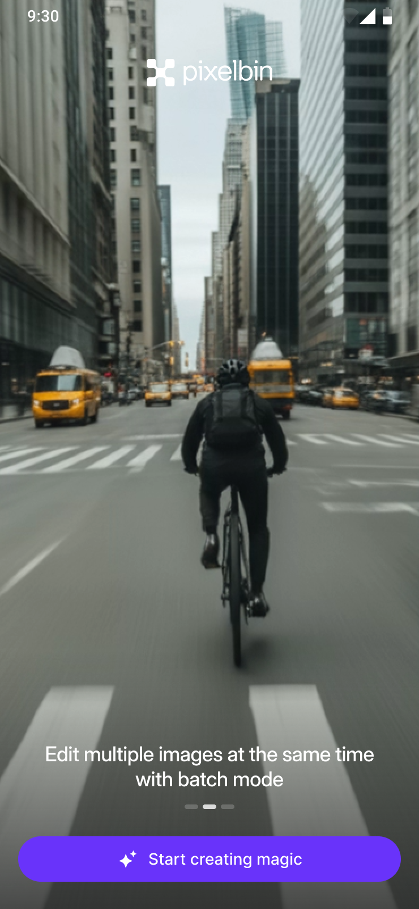

How Do You Explain
AI in 3 Swipes?
Onboarding
The Problem
Most users have never used an AI creative tool on mobile. They don't know what's possible. The onboarding has to communicate three capabilities — image generation, batch editing, and video creation — before the user even creates an account.



The Design Decision
Three swipeable cards, each showing one capability with a single visual. No feature lists. No tutorials. Just three promises: "Generate images," "Batch edit," "Make videos." The user understands what the app does before signing up.
How Do You Fit
6 Editing Tools on
a 6-Inch Screen?
AI Image Editor
The Problem
The AI Image Editor has six distinct tools — Prompt editing, Smart Select, Brush Select, Upscale, Watermark Removal, and Adjust. On desktop, these live in a sidebar. On mobile, there's no sidebar. Every tool needs to be reachable with one thumb without hiding the image being edited.


The Design Decision
Every tool slides up as a bottom sheet — the mobile-native pattern for contextual panels. The image stays visible above. The tool controls sit in the thumb zone below. Six tools, one interaction pattern, zero learning curve between them.